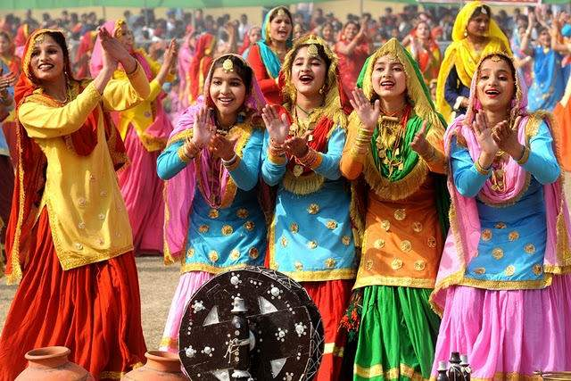

body>GIDDHA

Giddha (Punjabi: گدها, ਗਿੱਧਾ, giddhā) is a popular folk dance of women in the Punjab region. The dance is often considered derived from the ancient dance known as the ring dance and is just as energetic as bhangra; at the same time it manages to creatively display feminine grace, elegance and flexibility. It is a highly colourful dance form which has spread to all regions of India. Women perform this dance mainly at festive or social occassions. The dance is accompanied by rhythmic clapping, with a typical traditional folk song performed by elder women in the background.[citation needed]
Giddha varies from other forms of traditional Punjabi dance in that it does not require the two-headed barrel dhol drum to be performed. Instead, women stand in a circle formation and clap rhythms. A lead woman will recite a boli (lyrics) with a refrain that the entire circle then repeats. The whole form of a giddha song is worked through in this call and response form. Giddha details stories of women's lives, including sexuality.[1]
History
Giddha is said to be originated from the ancient ring dance which was dominant in Punjab in the olden days. Women show the same level of energy which the men show while performing bhangra. Giddha displays a traditional mode of performing Punjabi femininity, as seen through dress, choreography, and language.[2] Since the Partition of India in 1947 and the division of Punjab into West Punjab (Pakistan) and East Punjab (India), folk dances of Punjab on both sides of the border have been consolidated, staged, and promoted as iconic expressions of Punjabi culture.[3] While the form of giddha was not seriously affected by Partition, Gibb Schreffler writes that it has been classified as the women's dance counterpart to the male form bhangra, despite that not entirely being the case.[3]
As Punjabi dance forms became codified in the 1960s-onward, bhangra and giddha competitions have become popular throughout Punjab and the Punjabi diaspora. Punjabi dance forms have also spread through collegiate-level dance troupes in Punjab since the 1960s and in South Asian student groups in the US, UK, and Canada since the 1990s.[4]